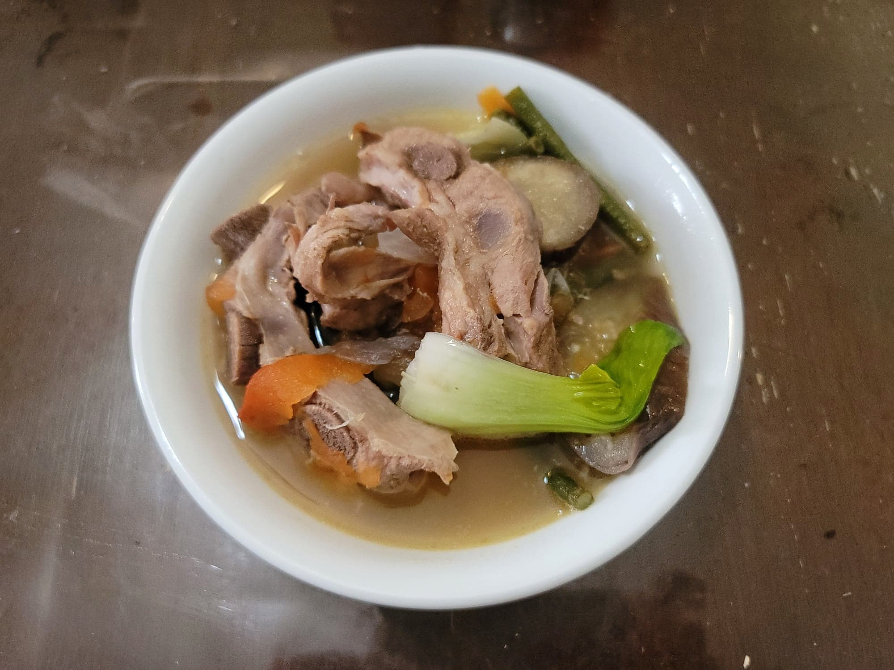

Sinigang

Ingredients:
- 2 lb Pork spare ribs or Buto-buto
- 8 cups Water
- 2 large Tomatoes, cut into wedges
- 1 Onion, sliced
- 2 tbsp Fish sauce + more to taste
- 6 pieces small Taro, peeled and quartered
- 1 6" piece Daikon radish, sliced into 1/2" pieces
- 2 Red thai chilies, slit
- 1/2 bunch Yardlong beans, cut into 3" pieces
- 1 Chinese eggplant, sliced into 1/2" pieces
- 6 pieces Okra, ends trimmed
- 15 pieces Tamarind + 1 cup water, or 1 1/2 packages Tamarind powder
- Salt, to taste
- Black pepper, to taste
- 1 bunch Bok choy, leaves separated
Instructions:
- Add the pork and water to a large pot. Heat over high heat and remove any scum that rises to the surface as it comes to a boil. Once at a boil and any scum has been removed, add in the tomatoes, onion, and fish sauce. Let come back to a boil and then reduce to a simmer. Cover and let cook for 90-120 minutes.
- If using fresh tamarind, you can prepare the tamarind mixture now. Place the tamarind and 1 cup of water into a sauce pan. Bring to a boil while crushing the tamarind with a fork. Let simmer and continue to mash the tamarind until fully incorporated. Then strain any solids out of the mixture and reserve the tamarind liquid.
- After 90-120 minutes, add in the taro and let cook for 5-6 minutes. Then add the radish and chilies and cook for another 2-3 minutes. Then the beans for 2 minutes. Then the eggplant and okra for 1-2 minutes.
- Stir in the tamarind liquid or powder. Then taste and season with salt/fish sauce and black pepper to taste. Add in the bok choy and cook for just 1 more minute or to preference. Serve hot over jasmine rice.